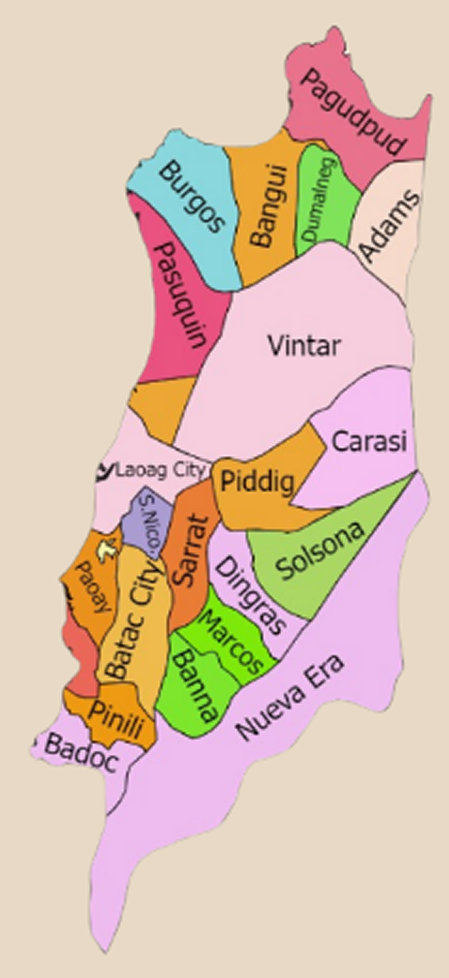

Ilocos Norte is a land of powerful landscapes and unshakable pride. Its raw beauty, from hills to shores, mirrors the strength of its traditions and people. Stories live in every celebration, craft, and custom – passed on with passion. It’s a place that stirs the soul and leaves your spirit soaring.
This shows the statistics about the languages spoken in Ilocos Norte.
